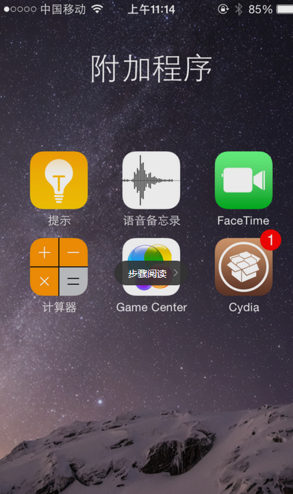
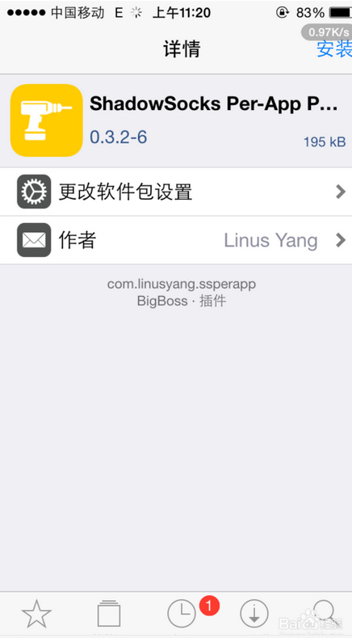

首先，您应该拥有一个 bluevpn pro 账号，然后再简单配置一下客户端，即可畅享网络，正版 bluevpn pro 账号从 这里 获得。
2017 年 7 月 29 日大量 APP 被苹果中国区下架。是否会重新在中国区上架目前尚未可知，请用美区帐号搜索。
ios9 以上设备 请越狱后安装 cydia 版的 shadowsocks
越狱版：http://apt.thebigboss.org/onepackage.php?bundleid=com.linusyang.shadowsocks
或使用 shadowrocket/wingy（需要美国账号购买）
非越狱设备需要使用付费客户端，并且需要美国账号才能购买，客户端不是由我们开发的，定价与我们无关，您自行决定是否购买。
https://itunes.apple.com/us/app/shadowrocket-for-shadowsocks/id932747118
请注意：这个app是应用程序创作者维护和开发的客户端不是由我们开发的，定价与我们无关，您自行决定是否购买。
一、未越狱IOS9如何使用影梭
1、在 Apple Store 中购买 shadowrocket 使用
购买地址：https://itunes.apple.com/cn/app/shadowrocket/id932747118?l=en&mt=8
下面是使用方法。
开启程序界面点击图中的扫描二维码按钮。
然后扫描您客户中心——我的产品与服务中的节点二维码，这样能够避免您的输入错误
启动代理前会提示您同意添加一个 VPN 连接，选择 Allow，还会需要验证指纹或者锁屏密码；
最后点击［Not Connected］后面的开关，看到信息变为 [Connected]，左上角出现VPN就可以使用啦～：
二、iOS 越狱了的话，直接在 Cydia 里搜索 Shadowsocks安装，具体步骤：
1、在桌面点击Cydia图标

2、在cydia里搜索shadowsocks

3、选择并安装——确定

4、安装过程如图——完成点击回到cydia

5、回到桌面点击影梭图标进入程序

6、勾选——启用代理——设置端口、账号、密码、加密方式——勾选自动代理
7、点击应用内代理——跳转至cydia

8、继续安装——完成重启设备

9、再次进入影梭程序——应用内代理——前往设置——勾选启用——勾选禁用SPDY——应用程序——勾选需要的软件即可——完成设置

10、测试一下OK

PS：ios8以上如须观看youtube视频须勾选设置插件中“ios8代理视频”
如果你的浏览器可以正常访问诸如 Google、YouTube、Twitter、Facebook 之类的在国内消失了的网站，那么就恭喜你，用 影梭 科学上网方式成功！